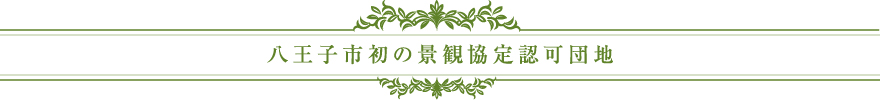
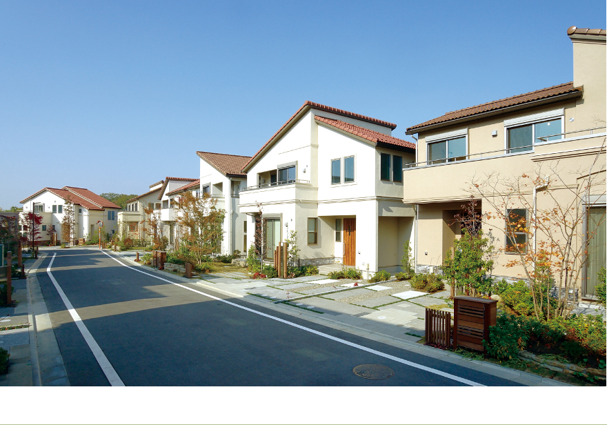
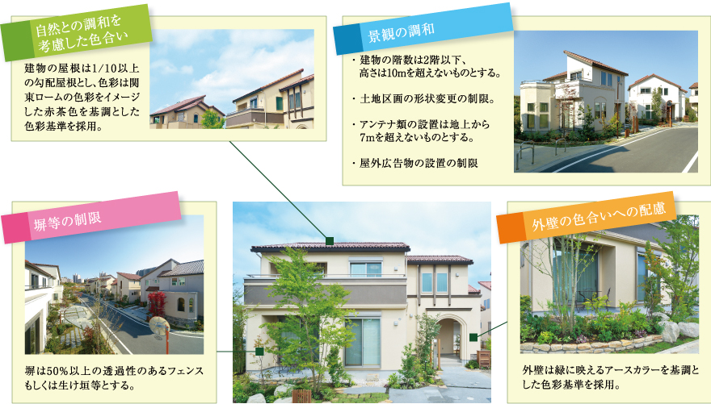

八王子市初の景観協定認可団地。全68区画の大規模新築一戸建て。
※掲載の街並写真は、第2期の街並（一部分譲済）を2014年4月に撮影したものです。 ※写真は一部CG加工を施しております。

「リーフィア南大沢」は、2013年11月に、八王子市では初となる景観協定の認可を受けました。景観協定は、建物の高さや
屋根・外壁の色、屋外広告物などを住宅所有者が自主規制し、街の景観や住環境を維持する取組みです。住まいの建替えをする際にも、
この協定に則った工事等が行われる事で、美しい街並や快適な住環境が将来にわたって維持されることが期待できます。
また、建替え時などに起こりがちな、様々な住民間のトラブルの回避にもつながることが期待されます。


このほか、一部擁壁の化粧型枠の採用や、地盤面の高さの変更の制限等が定められております。詳細は現地係員にお尋ねください。
※掲載の写真は分譲済の街並みを撮影（2013年8月、11月）したものに一部加工を施したもので、実際とは多少異なります。

八王子市初の景観協定認可団地。全68区画の大規模新築一戸建
小田急不動産株式会社 〒151-0061東京都渋谷区初台1-47-1小田急西新宿ビル
CopyrightcOdakyu Real Estate Co.,Ltd All rights reserved